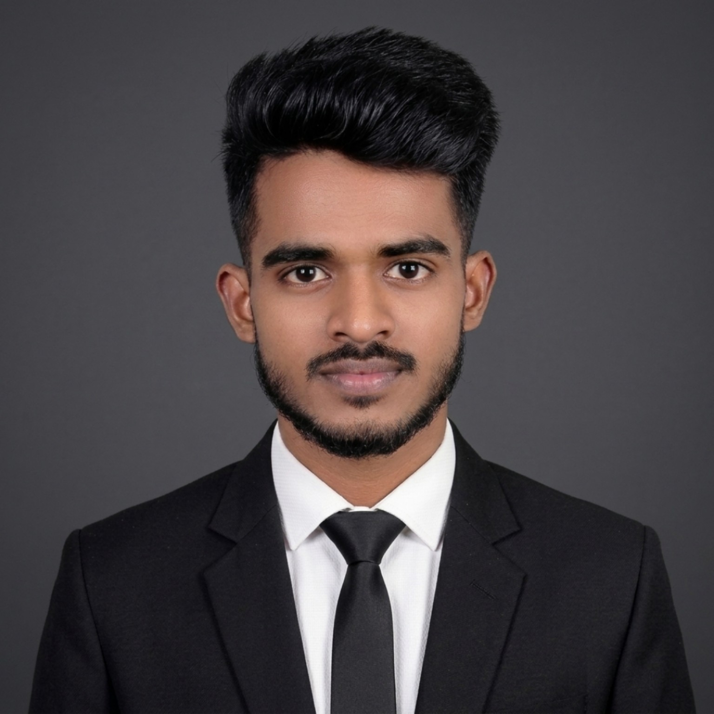

Arul Selvam A
Robotics & Automation Engineer
B.E. Robotics and Automation Engineering student with an interest in automotive manufacturing and industrial automation. Interested in CAD, PLC, robotics, manufacturing processes and practical engineering problem solving.

About Me
I am a B.E. Robotics and Automation Engineering student with an interest in automotive manufacturing and industrial automation. I have basic knowledge of manufacturing processes, CAD, PLC, robotics and quality inspection. I enjoy working in a team, learning new technologies and solving practical engineering problems. I am a quick learner and ready to adapt to a production-oriented work environment.
Education
B.E. Robotics and Automation Engineering
Karpaga Vinayaga College of Engineering and Technology, Anna University, Chengalpattu
2023–2027 · CGPA: 7.5
HSC – 12th · State Board · 2022–2023 · 60%
SSLC – 10th · State Board · 2020–2021 · 95%
Technical Skills
Featured Projects
Hand Gesture Controlled Robotic Arm
Developed a real-time gesture-controlled robotic arm using OpenCV, Python, Arduino and Embedded C to translate live hand movements into precise multi-axis commands for smooth, low-latency contactless human-robot interaction.
Autonomous Drone Development Challenge
Designed lightweight UAV architecture and integrated a real-time YOLOv8 vision pipeline for autonomous target detection and navigation. Validated the system through flight testing and optimized sensor mounting, latency and detection thresholds.
A Multiphysics Approach to Drone Design
Presented a research paper on multiphysics-based drone design, integrating structural, aerodynamic and thermal simulations to optimize drone performance at ICNGTS 2026, Chennai.
Experience & Activities
Robotics Training Intern — Motherson Company
Hands-on exposure to Kawasaki and ABB robotic arms, their operation and applications in automated manufacturing environments.
ROS Workshop — PSG College of Technology, Coimbatore · Additive Manufacturing — TANCAM at Tidel Park · CAD events at Vel Tech Multi Tech and Sri Sairam Institute of Technology.
Overall Coordinator — MATHARE (2024–2026), STRINGZZ (2025–2026), ROBONEXUS (Oct 2025). Vice President — Photography Club. Anna University Zonal Sports 2025–26 — Hockey, 3rd place.
Let's Connect
Email: arulselvam.in@gmail.com
Phone: +91 9025827412
Location: Kelambakkam, Chennai, Tamil Nadu
Open LinkedIn